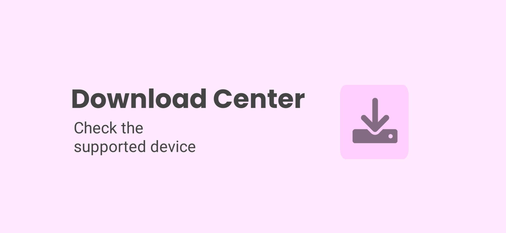
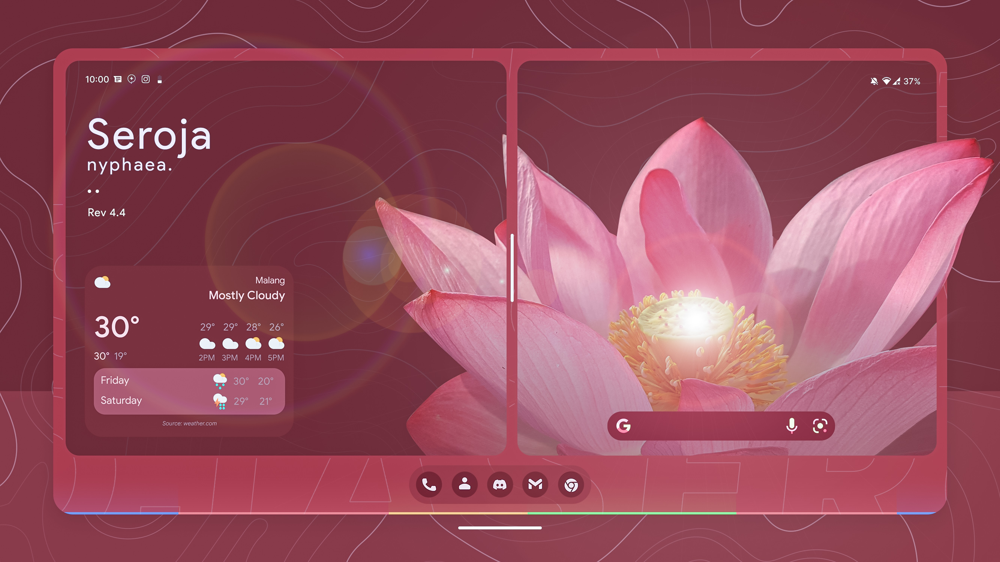

MKZU.
Nusantara Project
KomodoOS
AncientOS
XdroidOSS


KomodoOS 4.4 Seroja
Download
×
Changelog
Upstream kernel to 4.14.286
Add some reserved size for partitions
Set readhead size 128kb to system and data
Address init denials
Enable window freeform management
Symlink bootdevice for lineage recovery
Bringback 32bit hw mtkpower 1.1 libs
Download